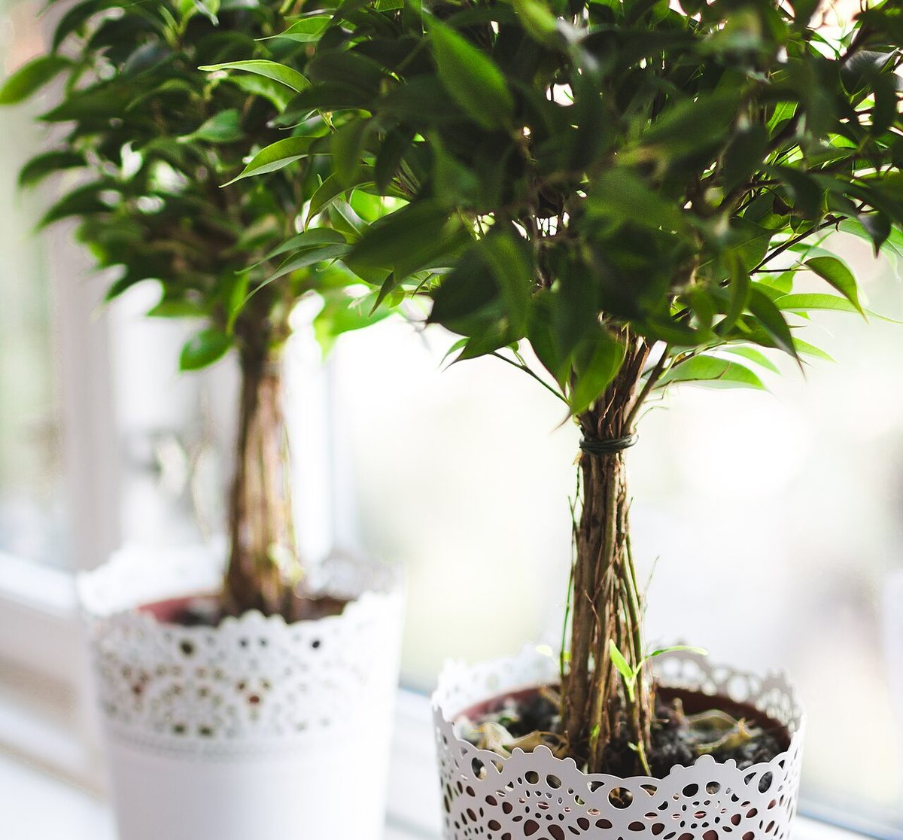

口コミ
以下は実際のお客様の声ではなく、サイトのイメージをお伝えするための創作例です。
- イメージ例
落ち着いて過ごせる空間で、ゆっくり一息つけました。
- イメージ例
窓の外の緑を眺めながら、のんびりした時間を過ごせました。
- イメージ例
近くまで来たときに、また立ち寄りたいと思える雰囲気でした。

本物の声は、こちらでご確認ください
実際の雰囲気は、Instagramやご来店でお確かめください。ご不明な点はお電話でもうかがいます。
以下は実際のお客様の声ではなく、サイトのイメージをお伝えするための創作例です。
落ち着いて過ごせる空間で、ゆっくり一息つけました。
窓の外の緑を眺めながら、のんびりした時間を過ごせました。
近くまで来たときに、また立ち寄りたいと思える雰囲気でした。

実際の雰囲気は、Instagramやご来店でお確かめください。ご不明な点はお電話でもうかがいます。
掲載写真はイメージ(フリー素材)です。実際のお店とは異なります。他の地域(海外を含む)で撮影されたものや、撮影地が不明なものが含まれます。メニューの写真は実際の提供品ではありません。
電話する 029-846-2845